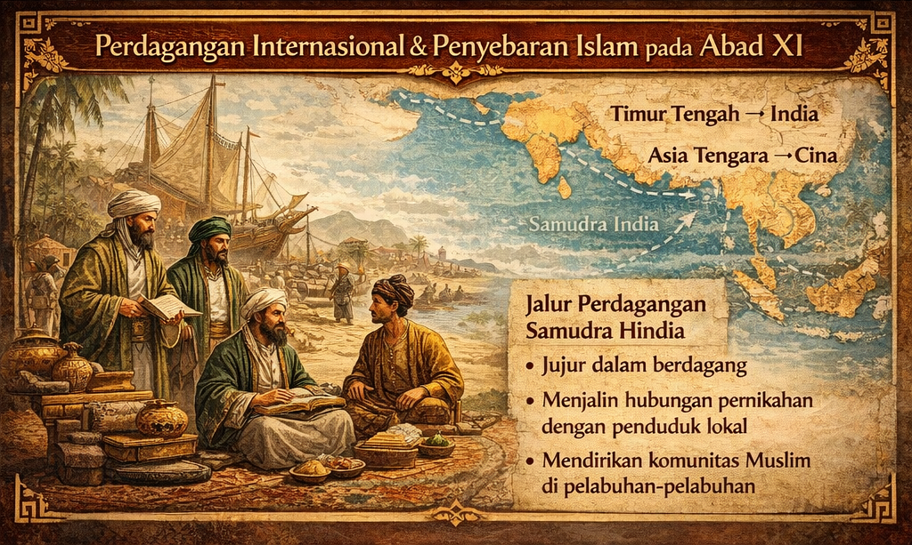

Abad ke-11 Masehi menandai periode transisi penting dalam sejarah Islam global yang berdampak signifikan terhadap penyebaran Islam di Nusantara. Pada masa ini, Dinasti Abbasiyah yang berpusat di Baghdad mengalami kemunduran kekuasaan politik meskipun masih diakui sebagai pemimpin simbolis umat Islam. Khalifah Abbasiyah berperan lebih sebagai pemimpin agama daripada penguasa politik nyata, dengan kekuasaan administratif dan militer diambil alih oleh dinasti-dinasti lain. Meskipun mengalami fragmentasi politik, Baghdad tetap mempertahankan posisinya sebagai pusat ilmu pengetahuan dan kebudayaan Islam, sehingga dunia Islam tetap terhubung kuat secara budaya dan keagamaan. Kondisi ini menciptakan dinamika baru dalam hubungan internasional yang turut memengaruhi pola perdagangan dan penyebaran Islam ke wilayah-wilayah timur, termasuk Nusantara.
Abad ke-11 menyaksikan bangkitnya Dinasti Seljuk, bangsa Turki Muslim yang menjadi kekuatan dominan baru dalam politik Islam. Dinasti Seljuk menguasai wilayah luas yang membentang dari Persia, Irak, hingga Asia Kecil, dan berperan sebagai pelindung politik dan militer bagi kekhalifahan Abbasiyah. Kontribusi terpenting Dinasti Seljuk adalah dalam menegakkan kembali ortodoksi Sunni Islam, mengembangkan sistem pendidikan formal Islam melalui jaringan madrasah, dan menyebarkan stabilitas di sepanjang jalur perdagangan internasional. Pada masa pemerintahan Seljuk, madrasah-madrasah berkembang pesat, termasuk Madrasah Nizamiyah yang terkenal, yang menjadi model pendidikan tinggi Islam. Stabilitas politik dan keamanan yang diciptakan oleh Dinasti Seljuk di jalur perdagangan darat dan laut sangat penting bagi intensifikasi aktivitas perdagangan Muslim ke Asia Tenggara, yang pada gilirannya mempercepat proses pengenalan Islam di Nusantara.
Abad ke-11 dikenal sebagai masa kejayaan intelektual Islam dengan perkembangan luar biasa dalam bidang ilmu pengetahuan dan kebudayaan. Sistem madrasah berkembang luas dengan kurikulum komprehensif yang mencakup ilmu agama seperti fikih, tafsir, dan hadis, serta ilmu-ilmu rasional seperti matematika, astronomi, filsafat, dan kedokteran. Periode ini melahirkan tokoh-tokoh besar yang memberikan kontribusi monumental bagi peradaban Islam dan dunia. Imam Al-Ghazali (1058-1111 M) muncul sebagai ulama terkemuka dalam bidang teologi dan tasawuf, dengan karyanya yang monumental Ihya Ulumuddin yang berhasil mengintegrasikan syariat dan tasawuf serta sangat berpengaruh dalam perkembangan pemikiran Islam. Ibnu Sina (Avicenna), meskipun meninggal pada 1037 M, pengaruhnya dalam bidang kedokteran dan filsafat masih sangat kuat di abad ke-11, dengan karyanya Al-Qanun fi al-Tibb yang digunakan sebagai rujukan medis di Eropa selama berabad-abad. Perkembangan ilmu pengetahuan ini menjadikan dunia Islam sebagai pusat peradaban global dan meningkatkan prestise Islam di mata bangsa-bangsa lain, termasuk masyarakat Nusantara yang berinteraksi dengan pedagang Muslim.
Abad ke-11 merupakan masa sangat aktifnya perdagangan internasional melalui jalur Samudra Hindia yang menghubungkan berbagai pusat peradaban dunia. Jalur perdagangan utama membentang dari Timur Tengah melalui India, kemudian ke Asia Tenggara, dan berakhir di Tiongkok, menciptakan jaringan ekonomi global yang sangat dinamis. Komoditas yang diperdagangkan meliputi rempah-rempah yang menjadi primadona perdagangan, emas, kain berkualitas tinggi, dan keramik dari berbagai daerah. Pedagang Muslim yang berasal dari Arab, Persia, dan India memainkan peran sentral dalam jaringan perdagangan ini, tidak hanya sebagai pelaku ekonomi tetapi juga sebagai agen penyebaran Islam melalui interaksi sosial yang intensif dengan penduduk lokal di berbagai pelabuhan. Aktivitas perdagangan yang semakin meningkat pada abad ke-11 ini membawa dampak langsung terhadap penguatan keberadaan komunitas Muslim di pelabuhan-pelabuhan Nusantara.
Pedagang Muslim pada abad ke-11 memiliki karakteristik dan metode khusus yang membuat mereka efektif dalam menyebarkan Islam secara damai di Nusantara. Mereka dikenal memiliki integritas tinggi dalam praktik perdagangan, menerapkan prinsip-prinsip kejujuran dan keadilan yang menjadi daya tarik tersendiri bagi masyarakat lokal. Selain aktivitas ekonomi, pedagang Muslim aktif menjalin hubungan pernikahan dengan penduduk lokal, menciptakan ikatan keluarga yang memperkuat posisi sosial mereka dan memfasilitasi transfer budaya dan nilai-nilai Islam. Para pedagang ini juga mendirikan komunitas Muslim di pelabuhan-pelabuhan strategis, membangun masjid-masjid kecil dan tempat berkumpul yang menjadi pusat kehidupan keagamaan dan sosial. Pendekatan yang damai, bertahap, dan tidak memaksakan ini membuat Islam diterima secara natural oleh masyarakat Nusantara, berbeda dengan pola penyebaran melalui penaklukan militer yang terjadi di beberapa wilayah lain.

Pada abad ke-11, meskipun Islam belum menjadi agama mayoritas di Nusantara, terjadi penguatan signifikan dalam struktur dan keberadaan komunitas Muslim. Berbeda dengan abad sebelumnya di mana pedagang Muslim hanya singgah sementara, pada abad ke-11 mereka mulai menetap secara permanen dan membangun komunitas yang lebih terorganisir. Islam berkembang terutama di kawasan pesisir Sumatra yang menjadi jalur perdagangan utama, pantai utara Jawa yang memiliki pelabuhan-pelabuhan ramai, dan wilayah-wilayah perdagangan strategis lainnya di Nusantara. Komunitas-komunitas Muslim ini tidak hanya berfungsi sebagai tempat berkumpul para pedagang, tetapi juga mulai menarik perhatian penduduk lokal dan elite setempat yang tertarik dengan ajaran Islam dan kebudayaan yang dibawa oleh para pedagang. Periode ini menandai transisi penting dari fase pengenalan awal menjadi fase penetrasi sosial yang lebih dalam.
Keberadaan komunitas Muslim di Nusantara pada abad ke-11 didukung oleh bukti-bukti arkeologis dan historis yang semakin kuat dibandingkan abad sebelumnya. Bukti paling signifikan adalah ditemukannya batu nisan Fatimah binti Maimun yang berangka tahun 1082 M di Leran, Gresik, Jawa Timur. Batu nisan ini merupakan bukti arkeologis penting yang menunjukkan keberadaan komunitas Muslim yang sudah menetap dan memiliki tradisi penguburan Islam di wilayah Jawa Timur pada akhir abad ke-11. Selain bukti arkeologis, terdapat pula catatan-catatan dari pedagang dan pelaut asing yang menyebutkan keberadaan komunitas Muslim di berbagai pelabuhan Nusantara. Jejak-jejak budaya Islam juga mulai terlihat dalam tradisi lokal, meskipun masih bercampur dengan elemen Hindu-Buddha dan kepercayaan lokal. Bukti-bukti ini secara kolektif memperkuat kesimpulan bahwa Islam telah berakar di Nusantara jauh sebelum munculnya kerajaan-kerajaan Islam besar di abad ke-13 dan seterusnya.
Islam pada abad ke-11 berkembang di Nusantara melalui pendekatan multidimensional yang melibatkan berbagai aspek kehidupan masyarakat. Perdagangan tetap menjadi sarana utama penyebaran, dengan para pedagang Muslim berperan sebagai dai tidak resmi yang memperkenalkan ajaran Islam melalui interaksi sehari-hari. Dimensi sosial dan budaya juga sangat penting, terutama melalui pernikahan campuran antara pedagang Muslim dengan perempuan lokal atau sebaliknya, yang menciptakan keluarga-keluarga Muslim baru dan memperluas jaringan sosial Islam. Proses adaptasi dengan budaya lokal dilakukan dengan bijaksana, di mana nilai-nilai Islam disebarkan tanpa menghilangkan atau memusuhi tradisi setempat, menciptakan sintesis budaya yang unik. Ajaran tasawuf atau sufisme juga mulai berperan penting pada periode ini karena pendekatannya yang menekankan akhlak, spiritualitas, dan keteladanan personal mudah diterima oleh masyarakat Nusantara yang sudah familiar dengan konsep-konsep mistis dalam tradisi Hindu-Buddha. Kombinasi metode-metode ini membuat Islam tidak hanya diterima sebagai agama ritual, tetapi juga sebagai sistem nilai yang komprehensif.
Perkembangan Islam pada abad ke-11 menjadi fondasi krusial bagi proses Islamisasi yang lebih masif di Nusantara pada abad-abad berikutnya. Periode ini berhasil membentuk komunitas Muslim yang stabil dan terorganisir dengan baik di berbagai pelabuhan strategis, menciptakan jaringan sosial dan ekonomi yang kuat. Islam mulai diterima tidak hanya oleh masyarakat biasa tetapi juga oleh kalangan elite lokal yang tertarik dengan kemajuan peradaban Islam dan keuntungan ekonomi yang dibawa oleh jaringan perdagangan Muslim. Fondasi yang dibangun pada abad ke-11 ini membuka jalan bagi kemunculan kerajaan-kerajaan Islam pertama di Nusantara, khususnya Kerajaan Samudra Pasai di Aceh pada abad ke-13 yang menjadi kerajaan Islam pertama di Asia Tenggara. Selain itu, jalur perdagangan dan jaringan ulama yang terbentuk pada periode ini menjadi infrastruktur penting bagi gelombang Islamisasi berikutnya yang menyebar ke Jawa dan wilayah-wilayah lain di Nusantara. Struktur sosial dan budaya yang tercipta pada abad ke-11 membuktikan bahwa Islamisasi Nusantara adalah proses panjang dan bertahap, bukan peristiwa tiba-tiba.
Abad ke-11 Masehi merupakan masa transisi dan penguatan yang sangat penting dalam sejarah perkembangan Islam di Nusantara. Di tingkat global, dunia Islam mengalami transformasi politik dengan melemahnya Dinasti Abbasiyah dan bangkitnya Dinasti Seljuk, namun tetap mengalami kejayaan dalam bidang ilmu pengetahuan dan kebudayaan yang menjadikannya pusat peradaban dunia. Di Nusantara, abad ke-11 menandai fase di mana Islam mulai mengakar secara sosial dan kultural, terutama melalui intensifikasi perdagangan internasional dan interaksi damai antara pedagang Muslim dengan masyarakat lokal. Bukti arkeologis seperti batu nisan Fatimah binti Maimun (1082 M) menunjukkan bahwa komunitas Muslim telah menetap secara permanen dan mengembangkan tradisi keagamaan di wilayah Nusantara. Metode penyebaran yang multidimensional melalui perdagangan, pernikahan, adaptasi budaya, dan tasawuf menciptakan penerimaan yang luas dan mendalam terhadap Islam. Perkembangan pada abad ke-11 ini menjadi dasar kuat bagi gelombang Islamisasi besar-besaran yang terjadi pada abad-abad berikutnya, membuktikan bahwa proses Islamisasi Nusantara adalah perjalanan panjang yang dimulai jauh sebelum munculnya kerajaan-kerajaan Islam besar.